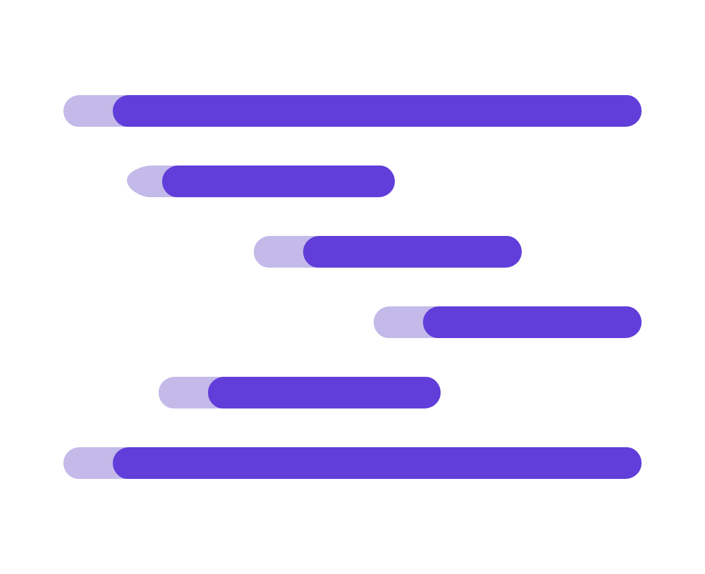

Skip to content

HStreamDB Docs
TLS/SSL
English
中文
Initializing search
hstreamdb/hstream
Overview
Getting started
Develop
Deployment
Reference
Contributing
HStreamDB Docs
hstreamdb/hstream
Overview
Overview
HStream Streaming Database Overview
Concepts
Concepts
Stream and Streaming Data
Query and Stream Processing
Architecture
Architecture
Overview
HStream Store (HStore)
HStream Server (HSQL)
Data Lifecycle
Features
Release Notes
Learning Resources
Getting started
Getting started
Quickstart with Docker
Basic Commands
Configurarion Overview
Dashboard Overview
Develop
Develop
Java SDK
Java SDK
Installation
Connect
Streams
Write Data
Consume Data
Stream Processing with SQL
CLI
CLI
CLI Usage
Deployment
Deployment
Running on Kubernetes
Reference
Reference
Security
Security
Security Checklist
Authentication
TLS/SSL
Encryption
Performance
SQL
SQL
SQL overview
SQL quick reference
Statements
Statements
CREATE STREAM
SELECT (Stream)
INSERT
Appendix
Frequently Asked Questions
Contributing
Contributing
Haskell style
Building from source
TODO
¶
Back to top